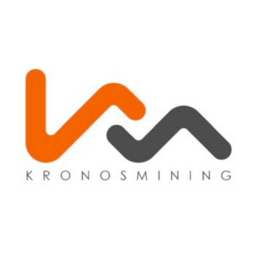
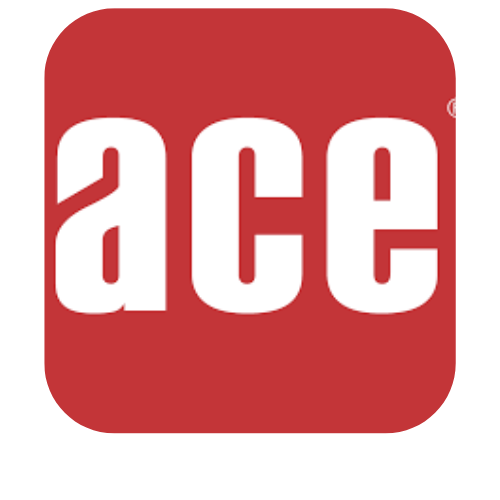

“Empresa con una trayectoria de más de 7 años en la industria. Se especializan en la fabricación de spools, la impermeabilización con poliurea y el revestimiento. Su experiencia se extiende a una variedad de aplicaciones, incluyendo espejos de agua, harneros, overhaul, canales de transporte, celdas de flotación, espesadores, molinos, estanques y pisos. Kronos Mining es reconocida por su experiencia y la calidad de su trabajo en el sector minero y de la construcción.”
“Empresa con más de 20 años de experiencia en el mercado europeo, siendo pionera en la introducción de la poliurea en los sectores de la construcción y la minería. La empresa se especializa en diferentes sectores, proporcionando soluciones de revestimiento y protección de alta calidad. Ace Coatings se distingue por su inversión en I+D+i, trabajando solo con materiales y proveedores de primera calidad. Además, cuenta con una red internacional de aplicadores homologados y un equipo de trabajadores con dilatada experiencia y alta capacidad para ofrecer resultados óptimos.”
